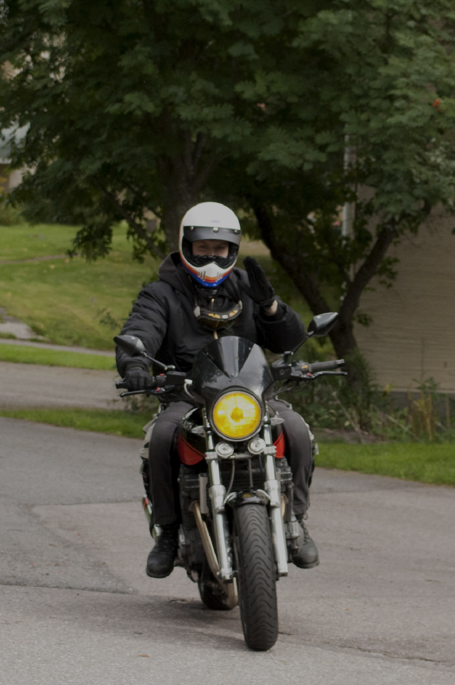

Yamaha MT-07
Wade
Wade

Honda CBR 500R
Anna
Anna

Suzuki GSX 1400
Matti
Matti

Harley-Davidson Night Rod
Tony
Tony
Welcome to Tony's Bikes, your go-to source for everything related to motorcycles. We are a group of friends who share a love for motorcycles.
I'm Tony, and together with my friends, we've explored countless tracks, experienced all kinds of bikes, and gathered the best gear to enhance our rides.
On this site, you’ll find a diverse collection of motorcycle types—from powerful cruisers and sport bikes to rugged dirt bikes and touring motorcycles.
Whether you're a seasoned rider or a beginner, we showcase bikes for every skill level and interest.
We also offer insights into the gear that makes every ride safer and more enjoyable, including accessories. Join us on our journey and get inspired to hit the road with the right bike and gear for your next adventure!